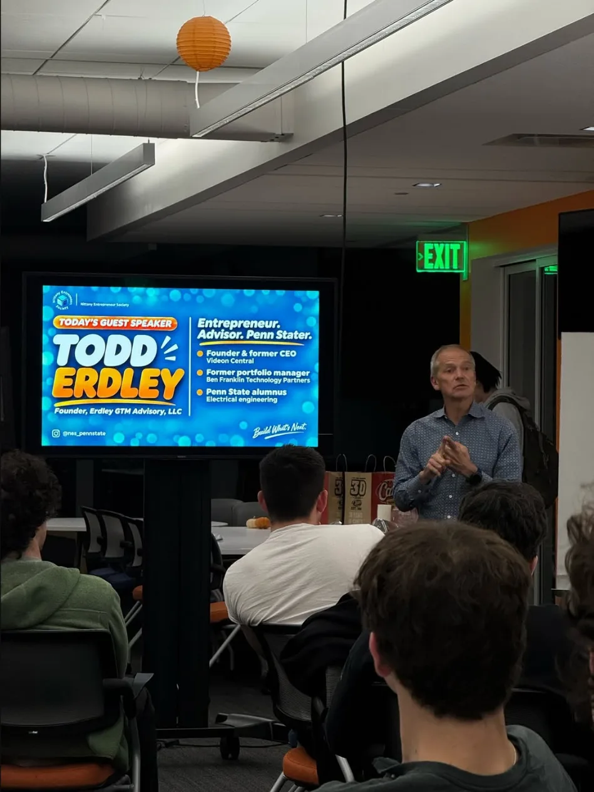

Todd Erdley has spent more than twenty-five years building companies, and he came to NES to tell us the part founders rarely hear: how the deal you sign to grow can decide whether you ever get paid. It was a blunt, funny, and generous talk, and it came with a framework we will be using for a long time.
Todd started as an electrical engineer. He went through three jobs in four years, realized he did not want to work for someone else, came home one day, and said he was quitting to start a company. His first company was, in his words, a total failure. He decided his next one would start with a strong business model and no outside capital.
He raised money from customers, not investors.
That next company was Videon. The model was simple. Semiconductor companies wanted to sell their chips to big electronics makers, and smaller companies kept knocking on their doors asking for help building with those chips. Videon offered to take that work: low-cost engineering services that helped chipmakers win more customers.
To get started, Todd bought a plane ticket to Silicon Valley and went door to door along the highway that runs through it. His offer: a year of engineering at a guaranteed low rate, paid up front. Two companies said yes. That was his starting capital, about $20,000. Within six months Videon had roughly half a million dollars in sales, and about $1.5 million by the end of its first year. Its software ended up inside DVD and Blu-ray players.

Then the business kept changing under him.
Napster and BitTorrent shifted power to consumers, and Todd bet on streaming. Live sports had a problem: delays of thirty seconds or more meant a friend’s text could spoil a play before you saw it. Todd asked where the bottleneck was and found it in sending video up to the cloud for processing. Videon moved much of that work onto the encoding device at the stadium, an early version of edge computing, and cut the delay to well under a second. The company built those devices for AWS, which sold thousands of them for live sports.
The paragraph he wishes he had read.
Then Todd asked how many of us were thinking about raising money, and read aloud the last paragraph of a startup book he wishes he had read years earlier. It explains that because of preferred share rights such as liquidation preferences, founders who hold common stock are usually last in line to get paid when a company is sold or shuts down. Lenders get paid first, then preferred investors, then everyone else.
He walked us through what that means. Each round shrinks the founder’s share. Even an IPO does not unlock the money: founders usually face a lockup period, must announce sales in advance, and can spook the market just by selling. New investors may also bring in their own leadership. After Videon raised outside money, Todd was moved out of the CEO seat. Over several more rounds the investors’ preferences stacked up, sales fell, and when the company was eventually sold, his common shares were worth very little.
Who gets paid first
A simplified order of who gets paid when a company is sold or wound down. Founders usually hold common stock.
- 01LendersBanks and other debtPaid first
- 02PreferredInvestors, with any liquidation preferencePaid next
- 03CommonFounders and employeesPaid last
He was not bitter about it. He had made sure to pay himself along the way, and he summed up where that left him with a story about an eighth grader who asked his net worth. His answer: he can have an ice cream sundae every day for the rest of his life, any size, any topping, but no cherry on top. He will take that.
Now he backs founders.
After leaving Videon, Todd joined Ben Franklin Technology Partners, a state-funded program that invests in early-stage Pennsylvania companies, from small grants up to larger checks for companies that are taking off. Over about three and a half years he deployed around $9 million across 32 companies, and he was proud that about 40 percent of them were led by women. The day of our meeting, he officially launched a new go-to-market advisory. It helps founders pin down the core problem they solve and their ideal customer, then build a sales strategy that uses AI tools to do work that once took whole teams.
Five things that govern a company.

His biggest piece of advice was a framework. He thinks of a company as an equation with five variables: market, technology, competition, customer, and the company’s own capability, meaning its money, people, and appetite for risk. Whether or not you ever raise money, he said, drilling into those five puts you far ahead of most founders. He singled out competition as the one people skip. Study your competitors relentlessly. Reports, stock filings, and their own marketing will tell you a lot.
On business models, he was even more direct. Anyone can write one in seconds now. What matters is building something rough, showing it to ten people to see if it solves the three to five pains you think it does, improving it, and then watching twenty people use it. He described visiting Netflix back when it still mailed discs, and seeing a steady stream of people sitting in its lobby testing what the streaming interface would look like and giving feedback in real time.
A few things we asked Todd.
Questions and answers are edited for clarity and paraphrased from the meeting.
Who actually needs to raise money?
Life sciences companies almost always do, because of the cost and time of getting through regulators. Physical product companies often do too, since they have to design, build, and ship something. A pure software company may not have to. Service businesses are the easiest to start without it, because the main cost is your own brainpower.
What if your competitors are raising lots of money?
That is a real problem, Todd said. Study them closely: who is funding them, what they are trying to win, and where the gaps are. Then find the niche they are not serving well.
If I win money at a pitch competition, what should I do with it?
Pay developers to get to a minimum viable product, then start pre-selling it and signing up early customers. The rest goes to marketing, which he said should be specific. Not “help me market,” but knowing exactly which customer you are fishing for, where, and when.
How did you go from engineering to starting a company?
He did not love being an engineer and kept changing jobs. Eventually he decided to start a company and went for it. There was no grand logic to it, he said. At some point you just have to go.
The room had ideas too.
Members shared what they are building, from a ticket resale marketplace that skips fees and earns from event merchandise at checkout to an AI assistant for job seekers. Todd gave each a quick read through his five variables and stayed after to talk. He spends Tuesdays at Happy Valley LaunchBox and invited anyone to come find him there.
The takeaway was not that raising money is bad. It is that money is a tool with terms attached, and founders should know exactly what they are signing. As Todd put it, when someone tells you a smaller piece of a bigger pie is a great deal, ask when you ever get to eat a bite.
FIVE THINGS TO DRILL INTO.
- Market: is the demand real and growing?
- Technology: what could replace you, including AI?
- Competition: who else is chasing this, and how?
- Customer: where are they, and what do they pay today?
- Capability: how much money, time, and risk can you take on?
This is an edited recap of Todd’s talk and the questions that followed, not a verbatim transcript. It leaves out internal club planning and conversation after the meeting.
Join the next conversation